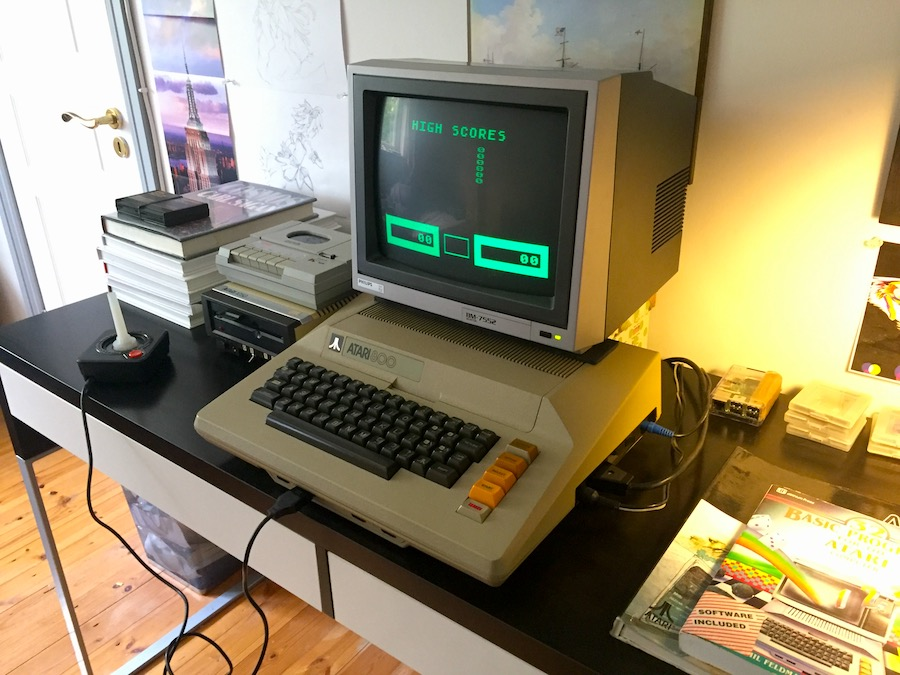
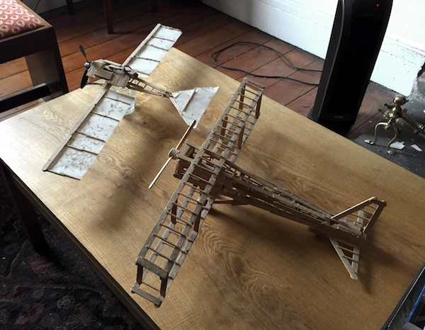
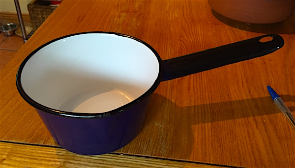

I know I'm late, but time flies buckaroonoes.
Hope you have a good year :P
Is it getting chilly wherever you are? Its sure getting cold here in the melon kingdom, just look at that snow outside!
I made a card just for you :}
Iv started logging my next trip to America, this one will run for a few months, so probably wont be as interesting and fast paced as the last.. but as a person who enjoys going slow, thats not a complaint from me! AMERICA TRIP 2
There have been a few comments in my guest book by people interested in getting into web making and coding. You know if you have any questions about that, email me! Im happy to answer questions and point people to resources. Here a few links that might help you get started now.
I plan to release a few tutorials that focus on retro sites like this one, but don't hold your breath!...
Iv been cleaning up my old Atari 800 for the last few weeks, the monitor finally arrived, here it is all setup and ready to go! (Once some power cables arrive for the drives...)
So the kingdom passed 100,000 views today, according to the neocities hit counter. I don't generally note these milestones, but this time is an exception :P
Im really pleased with the way people have responded to this site. I hope it inspires you to make your own things.
Its been a month since my last update! Don't worry Im not dead, at least I'm fairly sure I'm not..
Ok I checked, I still have a reflection so yes Im not dead! I had finals, which I passed Yay me! And now Im working on a secret project..
Id tell you more about it, but I might give up and look like a right goof, so Ill just say, I MIGHT launch a cool thing in a few weeks... ;)
See ya soon, -Melo
Something that worries me is how this site will survive in 10-100 years time, Id like to think it would be here even if I got hit by a bus tomorrow.
With that in mind, all music and videos that depended on youtube have been replaced with on site media! It may be a little slower perhaps but in years to come when youtube fails, melonland will continue on!
Hi everyone! Its been a month since my last update. As usual I was actually just lazy, but I also have a big new thing!
A brand new VR section to the site! At least its a 3D section, I have not yet figured out how to get it on a VR headset.
The world is changing people! And while the 2d web is lovely, I think we can do better, and I sure plan to try!
This new section will be both about exploring and showing off 3D stuff. I think already I can see potential for doing things that were really not possible before. Its very exciting to have a whole new platform to create while still adding to this site!
Its quite simple for now but that will change >:D Give it a go here! 3D HYPER PORTAL LINK
Iv been doing some work on the story out the window, its slow work, but its better than the copout google link I had there..
There is no end yet, Ill add one some day, but give it a try if you like!
I came upon these planes I made many years ago. They need some repairs and a serious dusting, but they are holding up well so far!

Hello humans! Its been a while since I updated, Iv been quite lazy.
College started again and thats a thing, its somewhat better this term, though I have a test this week so maybe it will seem worse after that!
Iv cleaned up the homepage, it was loosing touch with its roots man, added some glow stars to the top so you remember your a star ;D
Do you ever wonder if this were your last update, what would the world remember you by, I like to hope every update to this site is one Id be proud to call the last, though I hope its not!
Anyway, enjoy the site, drop a note in the guestbook, I always like to know when people have dropped by.
Happy Christmas! Im working on adding badges and links to all my favourite peeps :D
Added some.. of them.. you know.. Robots.. ;) Take a look over here..
Added a new page to generate hacker names, very important, get your hacker name here!
Join the NeoMail mailing group! Keep up to date with neocities users everywhere. More info here.
Yo yo yo, what up home dog melsters and sphere aficionados. I figured I auta drop some updates on here since its been a while. Lifes been pretty slow the last while so the content gets slow too it seems.
Ya can't always be a rushhin bug as the kids say.. or at least as they should say cus thats hella clever! Cus bugs are always rushing and Russian spys bug places.. if it were the 60s..
ANYWAY, Im gonna get some new stuff up real soon, add some free downloads to that gift shop over there ;D So stay tuned and keep it fresh.. cus you know.. melons.. fruit.. fresh fruit.. Im amazing!
Wanna hear what I've been up to the last few weeks in the US? Yeh you do! Read my journal here and try the virtual cable car!
Melon Land has been open for business for 1 whole dang month! Here are some hella stats!
Time will go on and melons will roll, but melon land will rule forever! Thanks for supporting my site, it means allot ;3
Heres a picture of my pan, I used to carry it everywhere, but I accidentally left it at someones house for 20 years, they just dropped it back!
I added a lil moon link up top there, I figured in a world where people seem so caught up in their own earth bound issues sometimes you need a reminder, its a big ass universe out there, don't be a twat and enjoy yourself.
So I know its only like the next day, but I added some crazy updates for you kids on the net and I figured it was worth posting about. Bookmark this page and keep ana eye out too, Im sure to add stuff and not tell anyone ;D
My website is now on the web :O Stay tuned, I plan to fill this site with all sorts of things, maybe you can find them all, but I doubt it!